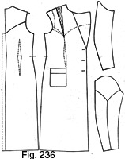

Early 1940's—Ladies' Garment Cutting and Making
by
F. R. Morris
Chapter XVII—Pattern Grading and Designing by Block Patterns
To draft a special pattern for every client would be bordering on the impractical and a serious waste of time for the busy cutter. It depends entirely on whether the client is a regular customer as to whether we keep a special pattern cut to her measurements; but, in these days, designs change so quickly that to cut a special pattern for every garment would be of no avail, for very few women ever like to have more than one garment cut in the same style. A special block pattern for each client is exceedingly useful for adapting to the different designs, as one cannot always be certain of infusing an identical cut in different garments cut to the same measurements. It is a well-known fact that some garments seem to be perfect from the first cut of the shears, while others "misfire" even with the best efforts.
The solution of the problem of retaining consistency of design and line lies in the use of standard block patterns for cutting the special patterns or cutting direct from the cloth. These block patterns should be cut as perfectly as possible, well balanced and brought right up to date by constant observation of small alterations met with in fitting-on. The possession of such a set of block patterns ranging from a 30-inch breast to a 46-inch breast would ensure a consistency of style and production not obtainable by the old-fashioned method of cutting special patterns by drafting out by system. For intricate designs, more attention can be given to the study of line and the actual designing and placement of seams if we possess a pattern which we can manipulate while retaining all the essential fitting qualities.
In the basic systems for jackets arid long coats, the author advocated a standard position for the sideseam, sidebody seams and panel seams, and by the use of block patterns for all variations of seam placement, cut in a range of sizes, we can be certain of retaining in every garment produced the identical characteristics of line and fitting quality possessed by the original proved pattern.
The designing of model coats is materially assisted by the use of a block pattern, for the waist suppression and hip overlap factors are decided and automatically become incorporated in the reconstructed design.
Types of Block Patterns
With regard to the most useful number and style of block patterns to cut, we need a set capable of adaptation to any variation of style and seam placement. To this end, the following patterns will be required—
(1) Plain outline block, consisting of back and forepart with an underarm sideseam only.
(2) Sidebody block, with underarm and sidebody seam.
(3) Panel back and front block.
(4) Lounge or chesterfield block, with a sideseam at the back of the scye and an underarm waist dart.
These block patterns permit of all the usual variations of seam placement in "classical" tailored jackets and long coats. For instance, we could have a plain back with a panel front, a plain front with a panel back, or a sidebody back with a panel front, as well as the seam placements of the original block patterns. In addition, any extra seams of design could be marked within the compass of the block pattern outline seams or by incorporated parts of the pattern being joined together and the design continued from one section of the block to another.
Sleeve blocks should be cut in two styles, the two-piece and the one-piece. The two-piece sleeve cut with a displaced hindarm seam and a three-quarter sleeve finish at the forearm seam, and the one-piece sleeve with a wrist dart to the elbow as in tweed coat sleeves, do not require to be too closely fitted.
The lounge and chesterfield blocks will be suitable for all designs with this arrangement of seams, but, by reason of this seam placement, the blocks are not adaptable to the other designs and form a section of their own.
Cutting and Grading Block Patterns
All block patterns are produced on the lines laid down in the basic systems and must be accurately drafted out and cut with every constructional point determined for grading purposes. Each block for jackets and long coats should be cut to the centre line of the fronts only, with the gorge run marked and cut to the size described in the basic systems, so that any style of fronts can be added when cutting out the special design or cutting direct from the material, whether single- or double-breasted, lancer-fronted or linked.
Each block should be cut with a bust dart from the shoulder seam, the dart being outlined with punch-holes for ease of marking on the material, and, additionally, a manipulation line for obtaining a gorge dart if necessary should be punch-marked down from the gorge in the usual position. Breast, waist and hip lines should be notched and clearly marked as with the back and front sleeve pitches.
The next step is to produce from the single tested block pattern a set or range of sizes for each distinct style, each additional size to retain the characteristics of style and fit of the original pattern so as to ensure uniformity throughout the range. While it may be possible to draft each pattern separately, the most accurate method of production of a range of sizes is by grading up and down from an intermediate size. Grading ensures uniformity, for each pattern increases or decreases in size an equal amount all through the pattern outline.
Grading must give the dimensions as found by direct drafting for the shoulder sections and retain the line and run of seams of the original. Therefore, to make sure that the graded patterns are proportionately correct throughout the range, the best plan is to cut the smallest size, the intermediate size and the largest size for a range extending from a 30-inch breast to a 46-inch breast. If we are grading only about four patterns, one size for the basic pattern will suffice, but when a large number of patterns, extending from a small breast size to an extremely large one, are required it is advisable to grade from more than one basic pattern for greater accuracy. Therefore, cut three patterns, a 30-inch breast, a 38-inch breast and a 46-inch breast, each to be as alike as the proverbial two peas, and then obtain the intermediate sizes by joining up the constructional points of the three patterns and dividing the distance between the points into the number of patterns required.
Plain Coat Block Patterns
Dealing with the plain coat block range first, draft and cut the three sizes as described in the basic systems, and then on a clean sheet of pattern paper mark carefully round the outline of the largest size. Mark in the breast, waist and hip balance lines and the sleeve pitch. This should be done very accurately in a thin line, by pencil in preference to chalk. Then take the 38-inch breast pattern, lay over the 46-inch breast outline and mark round in a similar manner, with the breast line and depth of scye accurately superimposed over the same balance lines of the larger outline. Carefully mark the waist and hip balance lines and the sleeve pitch. The smallest size, the 30-inch breast, is then laid on the pattern paper with the breast balance line superimposed over the original balance line of the 46-inch breast pattern. Mark the waist, hips and sleeve balance points as above.
We now have the outlines of the three sizes on one sheet of pattern paper and can produce from this a range of sizes for every 1-inch or 2-inch increase in the breast size from 30 to 46 inches. We have the constructional points of the two outside patterns and the middle size, and by joining these points by grading lines we can obtain the dimensions and shape of the intermediate sizes.
Fig. 226
To grade the back, firstly join the centre back line between the three points to find the depth of the scye for the patterns to be produced. Then join the back neck points with a grading line running from the largest to the smallest size. Similarly, connect up the shoulder ends by a grading line and the three sleeve pitches in a like manner. Extend the breast line between the 30-inch breast sideseam to the 46-inch breast sideseam, and then connect up the three waist balance marks and the three hip balance marks to determine the increase in the waist and hip levels from the breast line.
Now if even sizes are required, we have to obtain sizes 40, 42 and 44 inches above the 38-inch breast outline, or, if odd and even sizes, 39, 40, 41, 42, 43, 44 and 45 inches. For even sizes, the distance between the middle and largest outlines will be required to be divided by four to give three points for the three sizes as indicated on the depth of the scye line. For uneven sizes, the distance will be divided by eight to give seven constructional points. For even sizes, the new constructional points will be each ¼ inch apart, as defined by the system, which gives an increase of ¼ inch in the depth of the scye for every 2-inch increase in the breast girth.
Similarly, divide the distance separating the shoulder point of the middle size from the shoulder point of the largest size by four, to give the shoulder points of the intermediate sizes. The back neck points are joined and divided by four to give the middle constructional points.
At the sideseam on the breast balance line, divide the distance between the outer and inner outlines by four to find the three intermediate sizes, and in a similar manner divide the distances separating the waist and hip balance marks. The length of the coats should be increased to agree with the lengths required and continued to the sideseams to intersect these lines.
This completes the grading above the middle size, and for producing the sizes from a 38-inch breast down to a 30-inch breast it is necessary to divide the distance separating the 38-inch breast outline from the 30-inch breast outline by four to give three even sizes, or by eight to give seven odd and even sizes. A point arises with regard to the odd sizes from a 31-inch to a 45-inch breast; it is much more accurate to draft another three odd sizes and make a separate grade than to endeavour to grade these with the even sizes, for when dealing with eighths of an inch, it is depending too much on accurate marking and cutting for the production of the sizes, and a little inaccuracy will also affect the even sizes adversely.
Divide up the depth of scye line joining the 30-inch breast and the 38-inch breast into four parts, locating the constructional points of three sizes, 32, 34 and 36 inches. In a similar manner, divide the distance separating the back neck points by four and the shoulder points by four to give the new constructional points of the 32-, 34- and 36-inch breast sizes.
Connect with a grading line the sleeve pitches and divide by four in similar manner to the above.
The distance between the sideseam points of the 30-inch and 38-inch breast outlines is divided by four to locate the sideseam commencement of the three intermediate sizes. Similarly, divide the grading lines joining the waist and hip balance points of the middle and inner sizes to define the waist and hip lines in their proportionate relationship to the breast line for the decrease in breast girth.
Mark the lengths of the three patterns by dividing into four the distance between the middle and smallest jacket lengths, obtaining three lengths.
When all the points have been obtained the next thing to do is to join them all up to produce the outlines of the additional pattern blocks. Carefully connect up each point to the other, making sure to retain the same outlines by ensuring that the lines are an equal distance apart throughout.
The connecting of the waist points will automatically define the waist line for all the intermediate sizes in relation to the breast and hip balance lines.
The length of the jacket blocks is immaterial for this factor is one of style only and governed by the client's wishes. The grade of the back shows a slight increase in length from a 38-inch breast to a 46-inch breast.
The Grade of the Foreparts
Fig. 227 illustrates the grade of the foreparts. Firstly, on a clean sheet of pattern paper, mark round the outline of the 46-inch breast block pattern. Make sure of marking the breast line clearly and accurately and, most important, the front of scye location point from which the scye line is squared up. This point is important because the similar points on the middle and smaller sizes are superimposed on this point to determine the increase of the grade at the fronts and shoulders. The across-chest measure for all patterns is taken forward from this point, which means that for any decrease or increase of the across-chest width by reason of decrease or increase in the breast girth, the distance of the centre line at the fronts from this point will define the extent of the variation.
To continue with the grade layout, mark the waist and hip balance points and the termination of the bust dart on the breast line. Do not mark the shoulder dart, but only define the quantity taken from the dart by leaving this space clear on the shoulder seam.
After the 46-inch breast size has been marked accurately, take the 38-inch breast forepart and carefully superimpose over the 46-inch outline, with the front of scye point exactly on the 46-inch breast point. The breast line of the 38-inch breast pattern should be in alignment with the 46-inch breast line, and when the pattern is accurately placed in position mark round the outline and indicate the waist and hip balance points and the termination of the shoulder dart at the breast line. The quantity taken from the shoulder dart is indicated by the space between the seams on the shoulder.
We have two outlines marked out and, to complete the foundations of the grade, place the 30-inch breast block pattern over the outlines of the middle and largest sizes and mark round, indicating the waist and hip balance lines in addition to the termination of the shoulder dart. The front of scye point is placed as usual over the same point on the two other sizes, and the breast balance lines are continuous.
When the three outlines are marked on the pattern paper, to complete the grade and obtain the outlines of the intermediate sizes, join all the constructional points as follows. Firstly, join the gorge points at the front centre lines to make a continuous run, and to obtain the three intermediate sizes from the 46-inch breast to the 38-inch breast and the 38-inch breast to the 30-inch breast, divide the distance between the three points by four in each case, giving the gorge points for 32-, 34-, 36-, 40-, 42-, and 44-inch breast sizes.
From the basic system we know that the across-chest width increases by ½ inch for every 2 inches increase in bust girth, so that the increase on the fronts is automatically decided as this quantity when the distance is divided between the three centre lines. Mark in the centre lines of the intermediate sizes by dividing the distance between the 38-inch breast centre line and the 46-inch breast edge by four to give the centre front lines of sizes 40-, 42 and 44-inch breast sizes. Then divide the distance separating the 38-inch breast and the 30-inch breast centre lines by four to give the three constructional points for the centre lines of 32-, 34- and 36-inch breast sizes. Rule lines from the gorge points through the breast line points to the bottom edge for intersecting the bottom construction lines marked across from the sideseam in accordance with the increase in length of the various sizes.
At the sideseams, divide the distance separating the outer sideseam from the middle by four to give the sideseam points of the three intermediate sizes, 40, 42 and 44 inches. At the natural waist line, join up the outer and inner waist line points, and divide the distance between these points to find the waist levels of the intermediate sizes.
At the bottom edge, join up the three sideseam termination points by a grading line, and divide the outer and inner distances by four in each case to locate the sideseam termination points of the six intermediate sizes, namely, 32, 34, 36, 40, 42 and 44 inches.
Shape the outlines of the intermediate sizes at the sideseam to run through each located point to terminate at the bottom edge in the length required to agree with the back grade.
At the front bottom edge, join by a grading line the three front bottom edge points as shown, and divide by four in each case to give the location points of the three intermediate sizes between the 30-inch and the 38-inch breasts and the 38-inch breast to the 46-inch breast.
Shape the bottom edge runs of the six intermediate sizes from the front and back sideseam points as indicated, and then connect up the bottom front edge points with the centre line location points on the breast line.
The shoulder section is the final operation. Here grading becomes more difficult owing to the gorge neck point remaining constant for breast sizes over 36 inches, which means a greater increase in the quantities taken out of the bust darts as the distance from the front neck point to the gorge neck point becomes greater with each increase in the across-chest width. This is clearly illustrated on the grade. The two outlines for 30-inch and 38-inch breast sizes show a forward diagonal increase of the shoulder end, bust dart points, and the gorge neck point, while, from 38-inch to 46-inch breast sizes, the shoulder end and bust dart seam points recede back in the opposite direction, the gorge neck point remaining constant and the gorge neck point advancing as usual with the across-chest width, the location of which is dependent on the distance back from the front centre line. The shoulder end and bust dart seam points recede owing to the constant position of the gorge neck point and the greater quantities taken from the bust dart back across the shoulder from the neck point, for obviously, if the neck point is fixed, any increased quantity to be taken out must increase the distance of the shoulder end from the neck point.
The grade is rather difficult to mark up clearly owing to the intersecting of lines caused by the advancing and receding of the shoulder ends and shoulder dart seams, but when the grade is being made to the full scale, the difficulty should disappear.
Firstly, join the 38-inch breast and the 46-inch breast shoulder ends, and divide the distance in between the points by four to give the shoulder end points of the intermediate sizes. Then divide the distance between the 38-inch and 30-inch breast outlines by four to locate the shoulder ends of the smaller sizes below the 38-inch breast size. Shape the front of scye lines from the front pitch to each of the located points as indicated. A considerable amount of overlapping of seams is apparent at the front of the scye, but when the grade is being cut up, if each line is traced off on to the pattern first before an attempt is made to cut out the sizes, the outlines will become clearly defined.
At the shoulder dart seam points, divide up the distance between the outer and inner points by two grading lines, and then mark up into four parts to give three location points in each case. Shape from the dart points to the shoulder end points to complete this section of the grade.
At the front of the dart, join the 30-inch breast neck point to the 38-inch breast point, and the 38-inch breast point vertically upwards to the 46-inch breast point by grading lines.
Divide the distance between the 30-inch and the 38-inch breast points by four to find the neck-point locations of 32-, 34- and 36-inch breast sizes, and then divide the vertical line joining the 38-inch and 46-inch breast neck points into four to find the three neck points of 40-, 42- and 44-inch breast sizes.
Join the gorge neck points from the 30-inch to the 38-inch and 46-inch breasts by a single grading line as shown, and then divide the distances between the points by four in each case to find the location points for the intermediate sizes. After locating these points, shape the gorge runs of the six new sizes from the front centre-line points as indicated and then from the gorge points to the front neck points in each case. No attempt will be made to indicate the shoulder darts for every size. It would be practically impossible to show each dart clearly owing to the constant overlapping of the lines, so that the termination points of each dart will be indicated, and then, when the grade is cut up or traced off on to a separate sheet of paper for each size, it will remain a simple matter to mark in the shoulder darts. Points 30, 38 and 46 illustrate the termination points of the shoulder darts on the breast line. To find the termination points of the intermediate sizes, divide the distances separating these points by four in each case to find the three location points to which to shape the shoulder darts.
Mark the front seam lines of the shoulder darts from each of the neck points to their respective termination points as indicated, and the quantity taken from each of the darts is illustrated by the distance of the shoulder dart seam points from the neck point in each instance.
This completes the foundation grade of the plain jacket draft.
To obtain the intermediate sizes from the foundation grade, one method is to trace through the outlines of each size on to a separate sheet of pattern paper and then cut out, taking care to trace accurately and mark all the balance points. Another method is to pin the foundation grade either to a sufficient number of sheets of paper for the sizes required or to a separate sheet for each size, and then cut round the outlines, cutting away a size each time until all the sizes are obtained. This method may be suitable for the back part, but with the complications caused by the overlapping and intersecting of the front of scye and shoulder seams on the foreparts it would not be practical, and the best method to adopt, for the fronts at least, is that of tracing off the sizes from the foundation grade. In any case, the retention of the grade is an advantage for future use.
The Sidebody Jacket Grade
The sidebody jacket grade is illustrated by Fig. 228, showing the back and sidebody graded to nine sizes from a 30-inch to a 46-inch breast. The fronts are identical with the plain forepart grade, as the position of the sideseam remains unchanged. The width of the back at the waist is definitely fixed as one-third of the scale less 1½ inches or to the shape desired as long as the waist suppression is reduced as described in the system.
To make the grade of the back part, take a clean sheet of pattern paper and mark round the outline of the 46-inch breast size, marking in the back sleeve pitch, the breast line and waist and hip balance points. Then place the 38-inch breast outline pattern over that of the 46-inch breast size, making the breast lines lie over each other, mark the waist, hips and sleeve notches, and finally superimpose the smallest size over the other two outlines with the breast lines in alignment, making sure to mark the balance notches carefully.
To obtain the intermediate sizes, join the back neck points by a grading line and then divide the distance between the 46-inch and the 38-inch breast outlines by four to give three location points for the 40-inch, 42-inch and 44-inch back neck points. On the continuation of the depth of scye line from the 30-inch to the 46-inch breast centre back neck points, divide the distances separating each point from the other by four in each case to find the depth of scye quantities for 32-, 34-, 36-, 40-, 42- and 44-inch breast sizes, the increase being ¼ inch in each size. Shape the back neck curve for each of the six intermediate sizes as indicated on the grade, then join the three shoulder end points by a grading line and divide by four in a similar manner to find the location points of the graded sizes. Shape the three new shoulder seams above the 38-inch breast and the three seams below the 38-inch breast to the coinciding points of the back neck curves.
The termination of the sideseam in each outline pattern is denned by a point 1¾ inches above the breast line for the 30-inch breast size, 2¼ inches for the 38-inch breast size and 2½ inches for the 46-inch breast size. Connect each of these points by a grading line to find the sideseam termination points of the intermediate sizes, and then divide the two distances separating each point by four in each instance to give six location points for the graded sizes. Join the back pitch notches in a similar manner, and divide by four in each case to find the increase in the back width of each size from the 30-inch to the 46-inch breast.
Shape the back-scye runs from the shoulder seams to the termination points of the sideseams as indicated, and connect up the waist balance notches and the hip notches. Then divide the distances separating the lengths of the three outline patterns by four in each case to find six jacket lengths for the intermediate sizes, and rule across from the centre back to meet the sideseam lines when graded down.
Join the corners of the outline block patterns by grading lines, divide up into the requisite number of sizes and connect up with the jacket-length points.
Divide the grading line joining the waist notch of the smallest size with that of the middle size by four to locate the waist lengths and widths of the back for the three sizes between the 30-inch and the 38-inch breasts. On the breast line, divide the distance between the inner and middle outline patterns by four to locate the breast-line positions of the intermediate sizes. Then shape the three sideseams from the termination of the sideseam to the waist and thence to the bottom edge.
Similarly, divide up the grade for the larger sizes above the 38-inch breast, and shape the three side-seams through the lengthened waist lines to the bottom edge and full jacket lengths for each new size to complete the grade of the back part.
The grade of the sidebody is as follows. Lay the 46-inch breast sidebody pattern on a sheet of paper and mark round the outline, notching the breast, waist and hip balance lines, and marking the breast line from seam to seam. Then place the 38-inch and 30-inch breast patterns on the outline of the 46-inch breast with the breast lines of each pattern superimposed on each other, and join the waist-line notches of the smallest size to the middle size and then to the largest size. Similarly, join up the hip-line notches by grading lines as shown.
Divide the distances separating the three jacket lengths by four in each instance to locate the required length for the intermediate breast sizes from 32 inches to 36 inches and 40 inches to 44 inches. The corners of the sidebody at the sideseam are also joined by a grading line to locate the sideseam terminations at the bottom edge. Divide the grading lines at the bottom edge by four in each case to define the intermediate sizes, and then divide up the waist grading lines to locate the sideseams of the six graded sizes. Similarly, at the breast line, mark the distances separating the sideseams into four divisions and then shape the sideseams as indicated.
At the termination of the sideseams at the back of the scye, divide the distances separating the outline points by four to find the point locations of the intermediate sizes, and then complete the grade of the sidebody by shaping the back-scye runs from the sideseam points to the termination at the back-scye.
Here, again, care must be taken in producing the sizes from the foundation grade owing to the close proximity of the size outlines.
This completes the grade of the back and sidebody for a sidebody lounge jacket, and the next pattern to grade is the panel back and front style.
The Grade of a Panel Jacket (Fig. 229)
From the grading point of view, the panel jacket presents more difficulties and takes more time to grade than any other jacket. On some sections of the block pattern the additions made for a 2-inch increase of breast size only amount to 3 1/16 inch, so that accuracy is important and essential when grading out a complete range of sizes.
For the block pattern cut the dimensions as standard; the width of the back waist panel is made one-sixth of the scale plus ½ inch, and on the hip line this quantity is increased by another ½ inch. At the shoulder seam, the panel is placed 2½ inches back from the back neck point, or exactly in the centre of the shoulder, and is gradually shaped down to the natural waist line.
To grade the back in a range of sizes extending from a 30-inch to a 46-inch breast, take the largest block pattern and mark round the outline. Notch the waist and hip balance lines, and mark in clearly the breast line from the centre back to the panel seam. When this has been done, place the 38-inch breast outline block pattern on the 46-inch outline, with the breast lines superimposed over each other, and then mark round the 30-inch breast pattern, notching the waist and hip balance lines. Then to complete the outline of the grade preparatory to obtaining the other sizes, mark round the 30-inch breast pattern after it has been placed on the draft with the breast line agreeing with the original line marked on the 46-inch breast pattern.
Connect by grading lines the following points of the three outline patterns: the depth of scye line, the back neck points and curves, the back panel seam positions in the shoulder seams, the breast lines, the waist balance points, the hip balance points and the lengths of jackets at the bottom edge of the panel seams. Then to produce the foundation grade, divide the distances between the three points on the depth of scye line by four in both instances to give six new points to determine the scye depths for the 32- to 36-and 40- to 44-inch breast sizes. At the back neck curves of the outline patterns, divide the grading lines by four to locate the back neck points of the intermediate sizes. Shape the back neck curves from the back neck points to the depth of scye points as shown, and then divide the distances separating the panel seam points by four in each case to locate six panel seam locations for the intermediate sizes.
Shape the shoulder seams from the panel seams to the back neck curve points as shown by Fig. 229, and then divide up the distances separating the outline panel seams at the breast line in the usual manner.
On the waist grading lines, divide by four to relocate the increase in the waist length from the 30-inch to the 46-inch breast at the panel back seam, and at the bottom edges divide the amount of length increase between the three patterns by four in each case to agree with the division of the grading lines joining the terminations of the panel seams at the bottom edges.
Shape the intermediate jacket length between 30-inch and 38-inch and 38-inch to 46-inch breast sizes as shown, and then complete the grade of the back panel by shaping the panel seams to each of their respective points at the shoulder seam, breast line, waist line, hip line and bottom edge lines.
The Side Panel Grade
The side panel is graded by taking the three outline patterns, 30-inch, 38-inch and 46-inch breast sizes, and then marking round the 46-inch pattern on a clean sheet of pattern paper and carefully marking the breast line, back sleeve pitch, waist line, hip line and full jacket length.
Superimpose the 38-inch breast side panel pattern over that of the 46-inch breast, making sure that the breast lines of both patterns are perfectly in alignment, and mark the waist, hip and sleeve balance notches as above. Finally, place the 30-inch breast pattern in position with the breast line running with the other sizes and mark the balance notches at the sleeve pitch, waist and hips.
The waist and hip balance notches have not been marked on the grade as the variation is covered by the general gradual waist suppression at this point and, when the graded patterns are cut out, the balance notch can then be placed to agree with the back panel notch at the waist line.
To grade the side back panel, make the requisite grading lines by joining the outline patterns at the following points: the termination of the panel seam on the shoulder seam, the shoulder end, the back pitch of the sleeve, the breast line, the waist line, the hip line and the full length line.
Continue up from the panel seam at the shoulder on the 30-inch breast outline to the 38-inch breast and then mark the distance between these points into four parts, obtaining three termination points for the panel seam of the side back panel. Similarly, divide the distance above the 38-inch breast to the 46-inch breast into four parts to give three location points for 40-, 42- and 44-inch breast sizes.
On the grading line joining the shoulder end points, divide into four parts respectively from the 30-inch to the 38-inch breast and the 38-inch breast to the 46-inch breast, obtaining shoulder-point locations for the breast sizes over 30 inches. Shape the back shoulder seams from the graded points at the shoulder end to their coinciding points at the back panel seam as shown.
Next, divide the distances separating the three sleeve pitches by four in each instance, to find the sleeve pitches and back widths of the intermediate sizes, and divide the distances separating the three sideseam positions from each other by four to find the sideseams of 32-inch to 36-inch and 40-inch to 44-inch breast sizes. Complete the grade at the shoulders and the back of the scye by shaping from the sideseam termination points through the respective sleeve pitches and shoulder points.
On the waist line, divide the distance separating the waist balance notch of the 30-inch breast outline from that of the 38-inch breast into four parts to locate the waist length of the three intermediate sizes. Similarly, divide the distance separating the waist notch of the 30-inch breast size from that of the 46-inch breast size into four parts so as to define the waist lengths of the breast sizes above 38 inches.
At the bottom edge of the grade, divide the distances between the three jacket lengths into four in each case, and shape the bottom edges of the additional six patterns from the panel-seam points to the sideseam termination points found by dividing the distances separating the sideseams by four as indicated.
To complete the grade of the side back panel, shape the intermediate sideseam lines from the under-scye points through their respective waist points down through the hip balance point to the bottom edge lines as indicated.
The waist balance notches should be checked after each side panel has been cut from the foundation grade and balanced up with the back panel.
This completes the grading of the side back panel, and the next operation is the grade of the side front panel in two sections for simplifying the outlines.
The Side Front Panel Grade
Fig. 230 illustrates the grade of the side front panel shown in two sections for clearness and simplicity. The first grade is from a 30-inch to a 38-inch breast and the second from a 38-inch to a 46-inch breast.
Mark round the outline of the 30-inch breast side front panel and clearly show the breast line and the front of scye line location point. Then take the 38-inch breast outline pattern and superimpose on the 30-inch breast outline with the breast line and the front of scye location points in alignment above each other.
To make the grade, join the shoulder-end points with a grading line and divide by four to give the shoulder-end points of 32-, 34- and 36-inch breast sizes. Similarly, join up the shoulder-panel seams by a grading line and divide the distance between these points by four to give the location points of the three additional sizes.
On the breast line, divide the distance separating the panel seam of the 30-inch breast outline pattern from the panel seam of the 38-inch breast into four parts to give the positions of the three additional panel seams of the 32-, 34-, and 36-inch breast sizes.
At the waist line, join up the two waist lengths by a grading line and divide into four to give the increase in waist length of the 32-, 34-, and 36-inch breast sizes.
At the bottom edge, join up the two panel-seam terminations by a grading line, and then divide up the distance separating the two points to find the panel seam positions and jacket lengths of the intermediate sizes. Similarly, at the sideseams, join up the two seam terminations of the sideseams to find the sideseam positions and lengths of the three intermediate sizes.
After marking all the grading points, complete the grade by connecting up the points by lines to define the outlines of the intermediate sizes as indicated.
To complete the grade from the 38-inch breast to the 46-inch breast, superimpose the outline of the 46-inch breast size over that of the 38-inch breast, making sure that the breast lines of the outline patterns are in alignment with the front of scye points directly above each other.
Join up the two shoulder-end points by a grading line, and then divide the distance between by four to give three shoulder-end location points for the intermediate sizes.
Join up the front panel-seam points by a grading line and mark into four parts to give panel-seam points for the 40-, 42-, and 46-inch breast sizes.
On the breast line, divide the distance separating the front panel seams into four parts to find the location points of the intermediate sizes.
Similarly, at the waist line join up the two waist length points by a grading line to determine the increase of width and waist lengths of the three intermediate sizes, and at the bottom edge connect the panel seams to find the increase of jacket lengths in proportion to the increase of size from the 32-inch to the 38-inch breast.
The sideseams of the intermediate sizes are indicated by joining up the breast line and bottom edge sideseam points by grading lines and dividing up as usual.
To complete the grade, shape the four front of scye lines to their respective points as indicated, and then join up the shoulder end and front panel-seam points as marked for the middle sizes.
Next, shape the front panel seams from the shoulder to the waist and full length points as indicated, joining up the points of the three intermediate sizes. Grade the bottom edge lines by connecting up all the points, and then complete by shaping the three side-seams of the intermediate sizes, running through the waist notches to define the increase of the waist length for the between sizes.
The Grade of the Front Panel
The grade of the front panel is indicated by Fig. 230. First, mark round the outline of the 46-inch breast front panel on a clean sheet of pattern paper and clearly mark in the breast line from edge to edge. Then take the two other outline patterns and superimpose over the 46-inch breast outline with the breast lines running in alignment. Connect up the panel seam termination points at the shoulder ends with a grading line, and divide the distance separating the points into four in each case to locate the shoulder points of the six intermediate sizes. Next, connect up the gorge neck points by a grading line, and divide the distances by four in each instance as usual. The gorge points at the centre front lines are then connected up to locate the centre lines of the intermediate sizes by dividing up the distances between the 30-inch breast and the 38-inch breast gorge points and the 38-inch and the 46-inch breast gorge points.
Similarly, at the breast line divide the distances separating the centre lines by four and mark the intermediate points for the 32-inch to 36-inch and the 40-inch to the 44-inch breast sizes.
Join up the centre-line termination points of the jacket lengths at the bottom front edge and divide into four parts as indicated, and then outline the intermediate sizes by connecting up each point by drafting lines to give the shape of the 32-inch to 36-inch and 40-inch to 44-inch breast sizes.
This completes the grading of the panel jacket. A point to note is that the position of the front panel seam is the same proportionally for all the sizes, that is, the centre of the shoulder back from the front neck point. For the larger sizes, the width increases naturally to cause the front panel seam on the side front panel to recede, as the neck point remains unchanged for breast sizes over 36 inches and the increase in the dart quantity must be taken out back across the shoulder from the neck point.
The chesterfield or lounge block pattern is not very suitable for grading on account of the underarm dart and the gorge dart requiring a change of location and size for every size increase. Also in breast sizes above 38 inches, the gorge dart is not very suitable and the shoulder dart should be used. Therefore, the author prefers to draft this style separately owing to the wedging open of the body part for the insertion of the hip overlap.
The Grade of the Two-piece Sleeve (Fig. 231)
To obtain the grade of the sleeves, draft out three sleeve patterns to agree with the scye circumferences of the 30-, 38- and 46-inch breast outline blocks and then place in position as follows. Mark round the outline of the 30-inch breast sleeve block pattern and indicate the forearm seam notch and the original hind-arm notch position 1½ inches back from the lowered hindarm seam. Then take the 38-inch breast pattern, place on the outline of the 30-inch breast size and mark in the outline. Similarly, place the 46-inch breast block pattern on the outlines of the two smaller sizes and mark in the hindarm seam notch. Connect up the hindarm seams by a grading line and divide up the distances separating the three points into four parts respectively to give the hindarm seam positions of the intermediate sizes. The shoulder seam notches of the sleeves are then joined to find the sleeve crown height of the six intermediate sizes.
Shape the sleeve heads of the additional sides by joining up the graded points as indicated in Fig. 231, with the grading lines tapering away to the front sleeve pitch.
At the elbow, connect the three elbow location points by a grading line and divide the distances between the points into four in each case. At the end of the sleeve, join the three lengths of hindarm by a grading line to be divided as above.
Complete the shapes of the intermediate sleeves by connecting up the located points as indicated in Fig. 231 and then proceed with the grade of the under-sleeve pattern.
The Grade of the Under-sleeve
Mark round the outline of the smallest size with the elbow location notched, and then superimpose the outlines of the two larger sizes on that of the smaller size, and position the forearm seams so that they run in alignment.
Connect the hindarm sleeve seams by a grading line and divide the distances separating the points by four to define the intermediate sleeve sizes. Mark up a ¼-inch seam notch at each of the additional points and then shape the under-sleeve seam runs of the intermediate sizes. Connect the elbow notches by a grading line, and then divide the distances between these points by four to define the sleeve outlines of the intermediate sizes. Next, join the hindarm seams at the cuff end of the sleeves by a grading line, and then divide the distances between these points by a grading line to find the sleeve lengths and cuff widths of the sizes from 32-inch to 36-inch and 40-inch to 44-inch breast sizes.
Shape the under-sleeves for all the additional sizes by connecting up the grading points by continuous lines, as illustrated, to complete the grade of the under-sleeves.
The Grade of the One-piece Sleeve (Fig. 232)
The one-piece sleeve is graded in a similar manner to the two-piece sleeve, i.e. by marking in the outline of the smaller size and then superimposing the outlines of the larger sizes thereon. Fig. 232 illustrates the full grade of the sleeve with the wrist darts indicated in the correct positions for each sleeve.
When the outlines of the block sleeve patterns are being marked round, the original hindarm seam position should be notched with the shoulder seam position on the sleeve.
Connect up all the constructional points of the grade from the 30-inch breast block pattern through the 38-inch breast pattern to the 46-inch breast block. These points are the hindarm seam positions, the shoulder seam points on the sleeve outlines and the underseam position of the sleeve seams. Also connect the sleeve length and wrist dart points to each other, and then divide by four in each instance, as illustrated, to determine the sleeve outlines of the intermediate sizes.
Complete the under-sleeve grade by connecting each graded point by a continuous line. The wrist dart position in each of the additional sizes is found by joining up the termination and commencement points of the three outline darts and, by a division of four, the intermediate points are located and the darts shaped out to complete the one-piece sleeve grade.
We have now completed the grading of our size range from the 30-inch breast to the 46-inch breast in the styles as follows: plain coat, sidebody coat and panel coat with one- and two-piece sleeves. As stated before, the possession of this pattern range should make for more uniformity of line and style in production in comparison with the drafting of special patterns for every client.
The standard measurements to which the block patterns are cut may be easily varied when marking out on the material, as described in the basic system drafts showing the necessary alterations for larger or smaller hips and waist girths or for an abnormally erect or stooping attitude of the figure.
Style-reading by the Use of Block Patterns
Style reading is also simplified by the use of a block pattern, for more attention can be given to this part of the work when the vital constructional points are decided and clearly defined in the block pattern.
As an example of the use of block patterns for style-reading purposes, the author has chosen a few rather cut-about coat designs to be drafted by the block pattern for size, and with the design to be adapted to the suppression factor as indicated in the block pattern proportions.
There will be only the variation from the standard outline illustrated by the diagrams, and descriptive matter will be of the nature of a guide to the deviation from the normal block pattern outline in interpreting the designs.
Fig. 233
Fig. 233 illustrates the use of a plain front and back block pattern for the designing of the accompanying style.
The design has two deep pleats at the back, held, in position by a belt and finished above the waist by two pressed-in darts, while the front is single-breasted, fastening with four buttons high to the neck and with a small single-breasted lapel and collar. Patch pockets are shown inset into a shoulder yoke seam, and similar pockets are placed on the hips. A tie-belt completes the picture and the edges and seams are suitably stitched.
Take the back block pattern and mark round the back neck shoulders and back scye and down the centre back, then swing the sideseam forward from the top of sideseam pivoting point and add about 6 inches to the hem width as indicated by the solid sideseam line. By this pattern manipulation, the standard quantity of waist suppression will have increased and the extra suppression is marked out in the two waist darts. From below the waistline the pleats are allowed to hang in two deep folds and should not be pressed in flat.
At the fronts, mark in the front shoulder yoke, making B from the termination of the bust dart at A a distance of 2 inches forward. Mark down from the top of the sideseam to C a distance of 4 inches for the position of the yoke seam at the sideseam and then join C to B. Join B to the bust dart point at D and then wedge out the bust dart from D to E by pivoting from A. Add seams round the seam from D to B and C on the bodypart, and an extra wide seam round the seam from D to B and C on the shoulder yoke to allow for the lapping of the seam.
Add 2½ inches at the front edge for the single-breasted front button fastening, and then mark out the waist suppression in two darts at F and G.
The sleeve has a formed cuff, which may be obtained by adding an extra inch to the sleeve length and then cutting through the sleeve and seaming up.
The tie-belt should be cut 60 inches in length and in width 2 inches at the back from sideseam to side-seam and tapering out wider from the point where it ties to the extreme ends.
 Fig. 234
Fig. 234

Fig. 234 illustrates a travelling ulster coat cut on simple lines but with original treatment of the sleeve and shoulders. A centre back seam and darts each side in the waist shape the back to the figure and a back slit and half belt is included in the sketch. At the back shoulder, the sleeve is lapped over into a point.
At the fronts, a similar sleeve treatment is shown, and a dart confines the waist to the figure in the absence of an all-round belt. Patch pockets with flaps complete the detail and the fronts fasten over double-breasted with three buttons.
A whole back and front block pattern is used for this design. On the back, mark in at the centre on the waist line a distance of ¾ inch. Shape the centre back seam from the nape of neck down to the waist and down to the hem line at the centre line. The remainder of the waist suppression is taken out in a dart midway between the centre back and sideseam, and the shoulder yoke treatment is marked on the pattern as illustrated, making point C 3½ inches below the back pitch.
At the fronts, mark in the shoulder yoke shape as shown, making point D at the front pitch and the angle of the design seams 4½ inches in length. Mark out the waist suppression in a dart at G and complete the pattern by adding 3½ inches beyond the centre line for the double front fastening.
The pocket measures 6 inches by 7½ inches finished, and as this garment is an ulster travelling coat everything should be on the heavy side in the matter of detail, such as ¾-inch lapped seams and a 2-inch width of back belt.
The shoulder points should be cut away from the pattern and placed in position on the sleeve to complete the draft.
 Fig. 235
Fig. 235

Fig. 235 shows a panelled-front coat with pleated back fullness. Two darts are shown above the waist at the back, which is cut with a seam across the waist, and the skirt part has two knife pleats to the hem line, stitched down from the waist to the hip level.
The fronts are cut double-breasted with an all-round roll collar and have two panel seams for detail at the attainment of a close-fitted waist effect. Below the waist on the front panel seam a welted pocket is placed.
This design is cut by a solid block front and back pattern. To commence, cut through the waist line at the back and mark out the two waist darts equal to the suppression quantity. On the skirt part of the back pattern, wedge open the pattern at the hem line and by pivoting from the waist line at the suppression position allow extra width for the pleats. This operation will cause the suppression lines at the hip level to open as indicated. When making-up sew down the pleats from waist to hip level on the lines marked.
At the fronts mark in the front panel seam, making it 4 inches from the centre line at the waist and reduce the front waist suppression at A to B. Mark in the secondary panel seam from the front pitch down to C, making C from B equal to 2 inches, and thence down to the hem line, making D from the front panel seam equal to 3½ inches. Mark in the welted pocket 3 inches below the waist as shown, and complete the pattern by adding 3 inches beyond the centre line for the front edge and the shape of the roll collar. The panel seams should be edge-stitched down to match the lapping of the waist over the skirt at the back.
Fig. 236
A "sporty" design is drafted in Fig. 236 by the use of a plain back and forepart block pattern. The back has a shaped yoke across the shoulders from the back sleeve pitch to the breast line, and below a centre slotted seam is indicated. Add 1½ inches down the centre back and cut on the fold edge of the material for the slotted seam. Mark out a dart 10 inches in length for the back waist suppression.
The fronts are designed with a shaped yoke across the breast and a seam to the pocket below. Therefore, when marking round the outlines of the block, add two seams to the width across the breast by marking round the sideseam and scye to the back shoulder dart seam, then move the block pattern forward ½ inch and complete the remainder of the outline, marking from the front seam of the shoulder dart round the gorge to down the fronts. Mark the yoke to run from the sleeve pitch to the breast prominence and then upwards into the front edge on the lapel, close over the shoulder dart two seams, and recut the shoulder section in one piece as indicated by the dash lines. Mark out the waist suppression in the panel seams and cut in the marks.
The top-sleeve has a shaped yoke across the head running from the pitch to a point on the hindarm, from which emanates a centre slotted seam to the wrist to agree with the back design. Add ¾ inch to each centre seam on the top-sleeve, and, to make the slotted seam, cut a suitable strip of material and lay it under the two sleeve seams for stitching down. A plain under-sleeve completes the draft of the coat by block pattern manipulation.
Fig. 237
Fig. 237 illustrates the cutting of a sports jacket of unusual design. Pockets are incorporated into shaped front panel seams and a repeat design is shown for the back. The fronts fasten single-breasted with double-breasted lapels, and patch pockets with flaps are shown on the hips.
The pattern is cut from a plain block front and back jacket. To commence, at the back mark in at the waist a distance of 2 inches for the shape of the panel seams. Square up from this point B to the level of the back pitch at C, and then square across to the back pitch to complete the outline of the panel seams. BB from B equals the back waist suppression quantity, marked out in dash lines up to point C and down to the hip level. Cut through the pattern from B and BB to the hip level, and then close BB to B to eliminate the back waist suppression and obtain the back pattern in one whole piece without any panel seams.
At the fronts, mark the bust dart forward 1½ inches towards the neckpoint as illustrated, and then mark down from the shoulder 6 inches to E, the commencement of the pocket position. Square across from E to F, 4½ inches for the pocket mouth, and then square down from F to G 4½ inches and from G square across to the sideseam at H. Square down from E to J, 2 inches below the waist line, and then square across from J to K at the sideseam. Mark out the waist suppression in a dart at L and complete the pattern by adding 1½ inches forward from the centre line for the front edge and double-breasted lapel as shown. The pocket measures 6 inches by 7 inches and is placed level with the panel seam at the front.
The skirt pattern may be cut through from L down to the hem line, and the waist suppression wedged out to provide for a plain block front to the skirt.
The Interpretation of Designs
The designing of garments by the use of block patterns is a matter of practice in the interpretation of line. Many cutters experience difficulty in cutting from a sketch by not being able to visualize the line of the design in relation to the flat draft. A good plan is to divide the sketch into sections by measuring the length of the head and dividing the remainder of the figure up in this ratio. One head width down from the nape of the neck would give the approximate position of the breast line, two heads find the waist line, and three heads the hip line. Five heads down is the approximate knee position. By dividing the figure up in this manner, the relation of design seams to each other and in comparison with the balance lines of the draft can be easily realized. Figure drawings are usually drawn to nine heads in length instead of the usual eight heads, the extra head length being added below the hip line, and it is better to keep the design seams well up on the draft as the finished coat will not appear as slender in appearance in comparison with the sketch.
A good balance of design is most important, and a point to remember is that design seams below the hip line always tend to shorten and widen the figure, whilst the same design above the hip line will accentuate the length of the limbs and the slender effect. Another point is always, if possible, compare the design on one side of the garment with its appearance when both sides are seen. Very often a line on the draft may seem correct and well designed on the half, but when the whole line is seen, as in wear, it may be out of true perspective. For instance, a very narrow panel down the centre back of a long coat may be drafted about 2 inches for distance from the centre back as this quantity appears sufficiently narrow on the half-draft, whereas, when the whole back is cut, the width becomes 4 inches and may be too wide for the design. What may look good on the half does not always present so neat an appearance when seen on the whole width; this is a point always to be aware of when designing ladies' garments and the fault of many garments possessing a total lack of style and line.